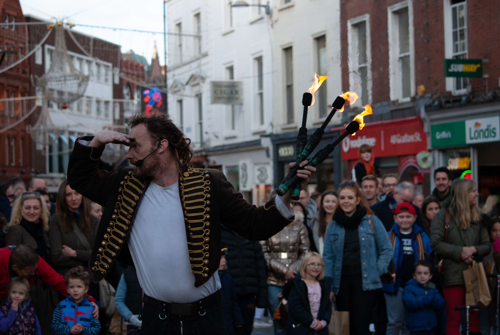
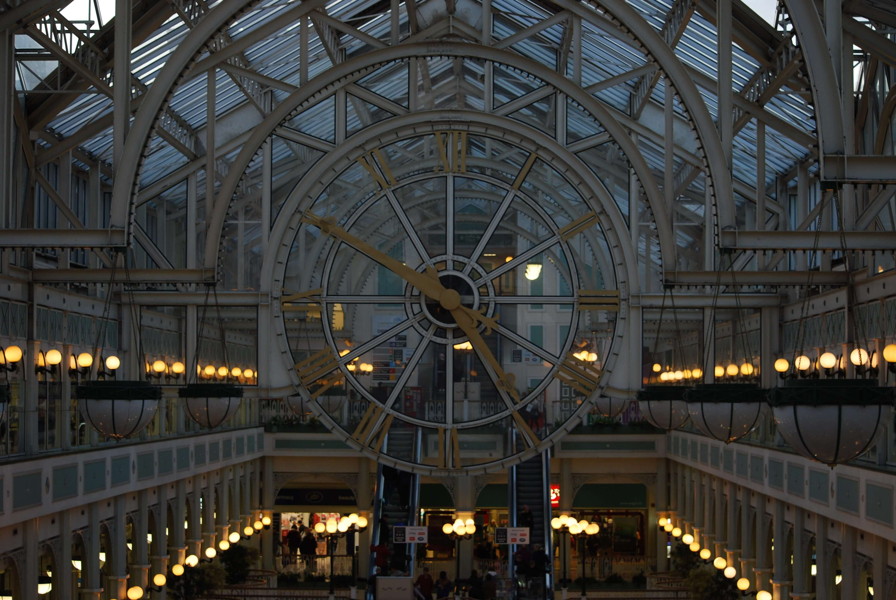
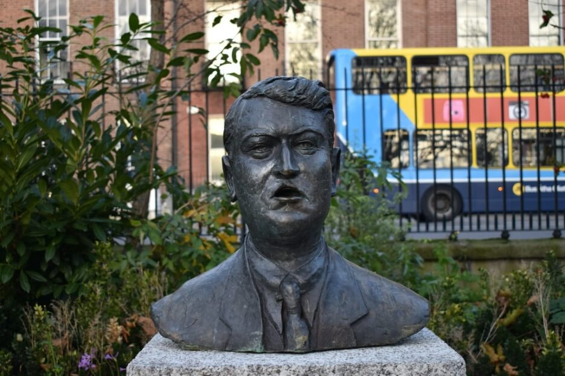
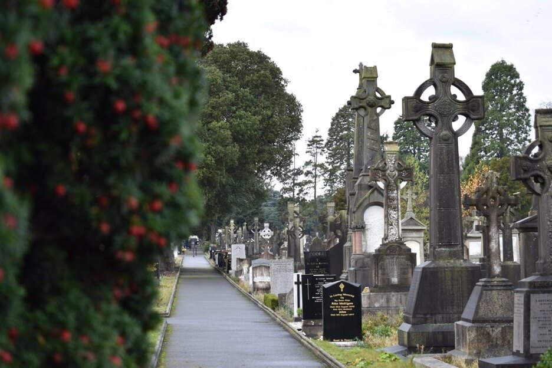
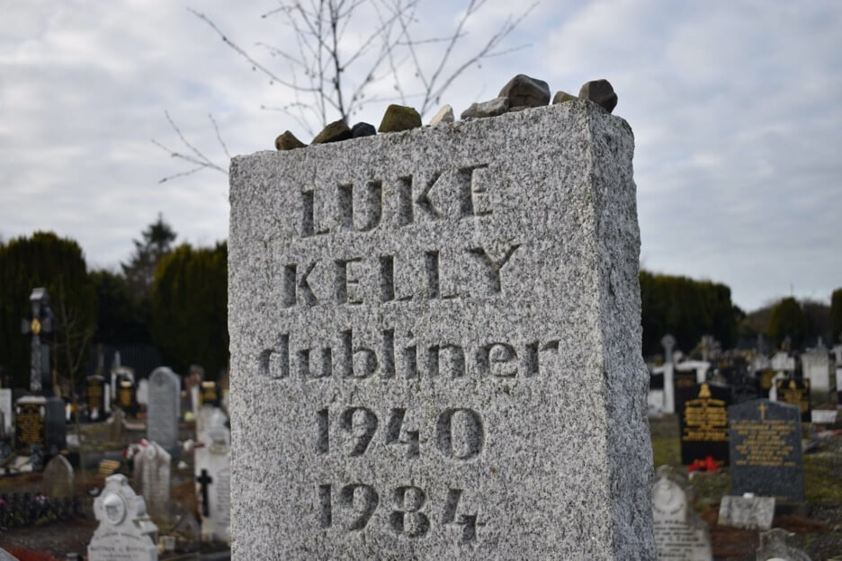
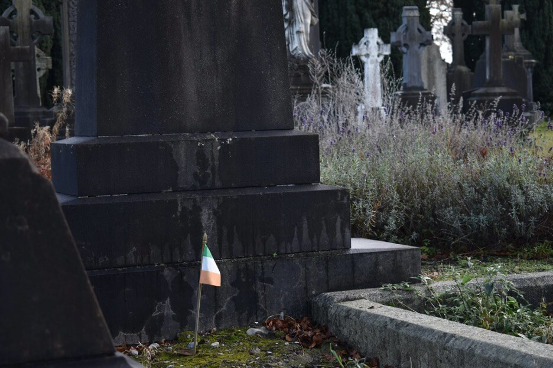

Photography has always been a passion of mine which came from my grandfather and my mother. My mam owns a photography business so I constantly want to make her proud with the stuff I do. I hope you enjoyed some of the photography that I got to work on.
If you want to go through the rest of my portfolio


Copyright © 2019. Anna Zurawska